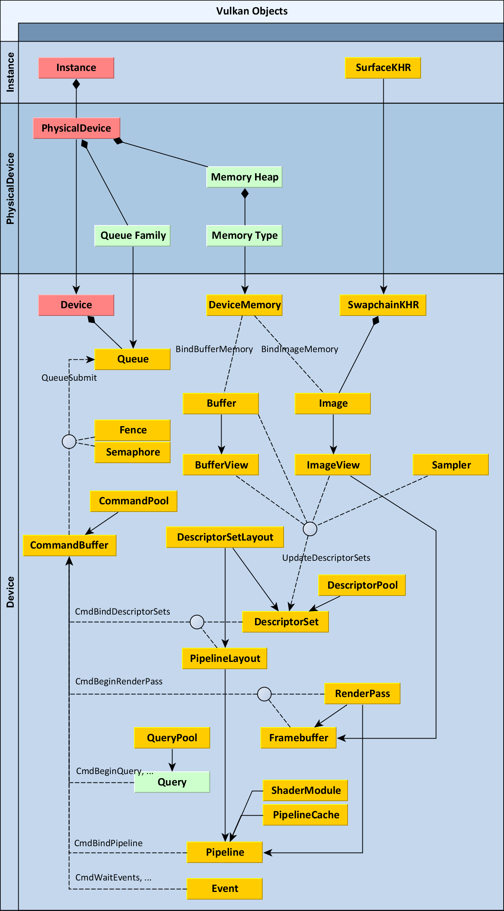

1. 流程总览
- 初始设置
- Instance 实例
- [Validation Layer 校验层]
- Physical Device & Queue Family 物理设备 与 队列族
- Device & Queue 逻辑设备 与 队列
- 呈现
- [Surface 窗口]
- Swapchain 交换链
- ImageView 图像视图
- Pipeline 管道
- Shader Modules 着色器
- Fixed Function 固定方法
- Renderpass 渲染流程
- 绘制
- Framebuffers 帧缓冲
- Commandbuffers 指令缓冲
- Rendering and presentation 渲染与呈现
- Recreation Swapchain 重绘交换链
注: []: 非 Vulkan 核心
init_global_layer_properties(info);
init_instance_extension_names(info);
init_device_extension_names(info);
init_instance(info, sample_title);
init_enumerate_device(info);
init_window_size(info, 500, 500);
init_connection(info);
init_window(info);
init_swapchain_extension(info);
init_device(info);
init_command_pool(info);
init_command_buffer(info);
execute_begin_command_buffer(info);
init_device_queue(info);
init_swap_chain(info);
init_depth_buffer(info);
init_uniform_buffer(info);
init_descriptor_and_pipeline_layouts(info, false);
init_renderpass(info, depthPresent);
#include "15-draw_cube.vert.h"
#include "15-draw_cube.frag.h"
VkShaderModuleCreateInfo vert_info = {};
VkShaderModuleCreateInfo frag_info = {};
vert_info.sType = frag_info.sType = VK_STRUCTURE_TYPE_SHADER_MODULE_CREATE_INFO;
vert_info.codeSize = sizeof(__draw_cube_vert);
vert_info.pCode = __draw_cube_vert;
frag_info.codeSize = sizeof(__draw_cube_frag);
frag_info.pCode = __draw_cube_frag;
init_shaders(info, &vert_info, &frag_info);
init_framebuffers(info, depthPresent);
init_vertex_buffer(info, g_vb_solid_face_colors_Data, sizeof(g_vb_solid_face_colors_Data),
sizeof(g_vb_solid_face_colors_Data[0]), false);
init_descriptor_pool(info, false);
init_descriptor_set(info, false);
init_pipeline_cache(info);
init_pipeline(info, depthPresent);
2. 初始化时, 涉及的 API
- 初始设置
- Instance 实例
- vkCreateInstance
- [Validation Layer 校验层]
- Physical Device & Queue Family 物理设备 与 队列族
- vkEnumeratePhysicalDevices
- vkGetPhysicalDeviceQueueFamilyProperties
- Device & Queue 逻辑设备 与 队列
- 呈现
- [Surface 窗口]
- Swapchain 交换链
- ImageView 图像视图
- Pipeline 管道
- Shader Modules 着色器
- Fixed Function 固定方法
- Renderpass 渲染流程
- 绘制
- Framebuffers 帧缓冲
- Commandbuffers 指令缓冲
- Rendering and presentation 渲染与呈现
- Recreation Swapchain 重绘交换链
2. 理解 Vulkan® Objects

-
绿色框: 无类型, 以 uint32_t 表示
-
实线+箭头: 创建顺序
-
实线+菱形: 组合 (被包含)
-
虚线: 通信
三个区域中, 红色为主 Object, 其他对象都直接或间接的由此对象创建. 表现为 vkCreateSwapchainKHR 需要 Device 为参数.
1. Instance
-
Instance 是创建的第一个对象。
-
它表示从应用程序到 Vulkan 运行时的连接，因此在应用程序中仅应存在一次。
- 它还存储使用 Vulkan 所需的所有特定于
应用程序的状态。 - 因此，您必须指定创建实例时要启用的所有层 Layers（例如验证层）和所有扩展 Extensions。
2. PhysicalDevice
- 表示特定的 Vulkan 兼容设备，例如图形卡。
vkEnumeratePhysicalDevices- 您可以从
Instance中枚举它们，然后可以查询它们的 vendorID，deviceID 和支持的功能以及其他属性和限制。 vkGetPhysicalDeviceQueueFamilyProperties- PhysicalDevice 可以枚举所有可用的 Queue Families 类型。
- 图形队列 Graphics Queue 是最主要的队列，但是您可能还有其他仅支持计算Compute 或传输 Transfer的队列。
- PhysicalDevice还可以枚举其内部的内存堆 Memory Heaps 和内存类型 Memory Types。
- Memory Heaps 代表特定的RAM池。
- 它可能会提取 主板上的系统RAM, 或专用图形卡上的视频RAM中的特定内存空间，或者实现要公开的任何其他特定于主机或设备的内存。
- 分配内存
Allocate Memory时必须指定 Memory Types。 - 它具有对 Memory Blob 的特定要求，例如对 host 可见，一致性 coherent（在CPU和GPU之间）和已缓存 cached。这些可能会任意组合，具体取决于设备驱动程序。
3. Device
- 又被视为 逻辑设备 Logical Device 或 Opened Device.
- 它代表了一个已经初始化的 Vulkan 设备, 准备好创建其他对象
- 创建设备时, 需指定启用哪些 Features, 并声明所有使用的 Queue, 其编号 和其 Queue Family
4. Queue
-
Device 上执行的命令队列 Queue of Commands。
-
通过使用
vkQueueSubmit填充 CommandBuffer 并将其提交到 Queue，来请求 GPU 完成的所有实际工作。 - 如果有多个队列，例如 Graphic Queue 和 Compute Queue，则可以向每个队列提交不同的CommandBuffer。这样，您就可以启用异步计算，如果执行正确的话，可以大大提高速度。
5. CommandPool
- 用于分配 CommandBuffer。它已连接到特定的 Queue Family。
6. CommandBuffer
- 从指定的CommandPool分配。它代表 Device 要执行的各种命令的缓冲区。
- 可以在 Command Buffer 上调用各
vkCmd开头的函数，用于指定 执行的任务的顺序，类型和参数。 - 之后 CommandBuffer 提交到 Queue 并最终由 Device 执行
7. Sampler
- 采样器 Sampler 未绑定到任何特定图像 Image。它只是一组状态参数 state parameters ，
- 例如过滤模式 (filtering mode)（最近或线性 nearest or linear）,或寻址模式 (addressing mode)（重复，钳位到边缘，钳位到边界等 repeat, clamp-to-edge, clamp-to-border）。
8. Image & Buffer
TODO
- 缓冲区和图像是占用设备内存的两种资源。
- 缓冲区比较简单。 它是任何具有长度的二进制数据的容器, 以字节表示。
- 另一方面，图像代表一组像素。
- 这是其他图形API中称为纹理的对象。
- 需要更多参数来指定图像的创建。 它可以是1D，2D或3D，具有各种像素格式（如R8G8B8A8_UNORM或R32_SFLOAT），
- 并且还可以包含许多离散图像，因为它可以具有多个阵列层或MIP级别（或两者）。
- 图片是一种独立的对象类型，因为它不一定只包含可以直接访问的线性像素集。
- 图像可以具有由图形驱动程序管理的不同的特定于实现的内部格式（平铺和布局）。
9. DeviceMemory
创建一定长度的缓冲区或具有特定尺寸的图像不会自动为其分配内存。 这是一个三步过程，必须由您手动执行。 您也可以选择使用我们的Vulkan内存分配器库，该库将为您分配资源。
1.分配DeviceMemory， 2.创建缓冲区或图像， 3.使用功能vkBindBufferMemory或vkBindImageMemory将它们绑定在一起。
因此，您还必须创建一个DeviceMemory对象。 它代表从特定内存类型（由PhysicalDevice支持）分配的内存块，具有特定的字节长度。 您不应该为每个缓冲区或映像分配单独的DeviceMemory。 相反，您应该分配更大的内存块，并将其中的一部分分配给缓冲区和图像。 分配是一项昂贵的操作，并且最大分配数量也受到限制，所有这些都可以从PhysicalDevice中查询。
对象组
设备
- Instance
- PhysicalDevice
- Queue Family
- Memory Heap
- Memory Type --> Device Memory
- Device
- Queue <-- Queue Family
图像
- Surface
- Swapchain
- Image
- ImageView
- Framebuffer <--RenderPass
管道
-
DescriptorSetLayout
-
PipelineLayout
-
ShaderModule
-
Pipeline Cache
-
PipeLine
DescriptorSet <-- DescriptorSetLayout, DescriptorPool
3. Pipeline
4. 详细
- Instance 实例
- [Validation Layer 校验层]
- Physical Device & Queue Family 物理设备 与 队列族
-
Device & Queue 逻辑设备 与 队列
-
[Surface 窗口]
- Swapchain 交换链
-
ImageView 图像视图
-
Pipeline 管道
- Shader Modules 着色器
- Fixed Function 固定方法
- Renderpass 渲染流程
- Framebuffers 帧缓冲
- Commandbuffers 指令缓冲
- Rendering and presentation 渲染与呈现
- Recreation Swapchain 重绘交换链